Decision Making with Uncertainty#
Michael J. Pyrcz, Professor, The University of Texas at Austin
Twitter | GitHub | Website | GoogleScholar | Geostatistics Book | YouTube | Applied Geostats in Python e-book | Applied Machine Learning in Python e-book | LinkedIn
Chapter of e-book “Applied Machine Learning in Python: a Hands-on Guide with Code”.
Cite this e-Book as:
Pyrcz, M.J., 2024, Applied Machine Learning in Python: A Hands-on Guide with Code [e-book]. Zenodo. doi:10.5281/zenodo.15169139 
The workflows in this book and more are available here:
Cite the MachineLearningDemos GitHub Repository as:
Pyrcz, M.J., 2024, MachineLearningDemos: Python Machine Learning Demonstration Workflows Repository (0.0.3) [Software]. Zenodo. DOI: 10.5281/zenodo.13835312. GitHub repository: GeostatsGuy/MachineLearningDemos 
By Michael J. Pyrcz
© Copyright 2024.
This chapter is a summary of Decision Making with Uncertainty including essential concepts:
establishing model realizations and decision scenarios
calculating expected profit over decision scenarios and selecting decision scenario that maximizes expected profit
designing loss functions
calculating the estimate that minimize the expected loss
YouTube Lecture: check out my lectures on:
For convenience here’s a summary of the salient points.
Motivation for Decision Making with Uncertainty#
We have built uncertainty models, now we need to make decisions in the presence of uncertainty.
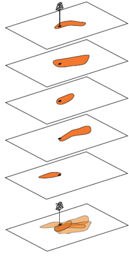
Building Uncertainty Models#
How did we calculate our uncertainty model(s)? Some examples,
Bayesian Updating - prior plus likelihood to calculate the posterior, for example, probability that a coin is fair, uncertainty in reservoir OIP
Bootstrap + Monte Carlo Simulation and Transfer Function - uncertainty the mean porosity by bootstrap, then Monte Carlo simulation for uncertainty in oil-in-place
Kriging - kriging estimate and variance with Gaussian assumption for uncertainty in mineral grade at a location
Simulation and Transfer Function - reservoir features realizations applied to flow simulation to calculate pre-drill production uncertainty at a new well
One way or another, we have calculated a reasonable uncertainty model, for example,
connected volume of water or hydrocarbon to a location
mineral or hydrocarbon resource in place
recover factor mineral or hydrocarbon extraction
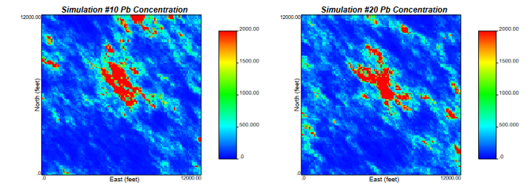
and now we must make a decision with that uncertainty model, for example,
number and locations of wells
time and volume injected for water of chemical flood, pump and treat remediation
dig limits and mine plan
Aspects of Subsurface Decision Making#
Decision making for subsurface development is a massive, integrated challenge! For an example consider the various aspects related to well site selection,
Integer programing problem, output must be an integer or discrete choice and not continuous
Optimization including single choice and joint choice optimization with constraints between each choice
Experimental design to explore a potentially vast uncertainty model space and then statistical / machine learning models to develop response surface, surrrogate models to support larger Monte Carlo simulation studies
Let’s back up and consider the problem from a data science perspect, our well site selection problem includes,
High dimensionality - complicated by large number of geological and engineering parameters in space and time
Interactions - complicated constraints and feedbacks between the geological and engineeirng parameters and our decisions, i.e., it is not appropriate to make \(L\)-optimum choices, a set of choices that are optimum for each model, instead we must make one globally optimum choice.
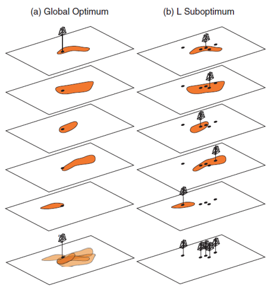
Expected Profit Workflow#
These are the steps in the expected profit workflow for optimum decision making in the presence of uncertainty,
Calculate the uncertainty model, \(\ell = 1,\ldots,L\) subsurface realizations
Establish \(s = 1,\dots,S\) development scenarios
Establish \(P\) profit metric
Calculate profit, \(P\), over all \(L\) and \(S\)
Calculate the expected profit for each development scenario, \(E\{P(S)\}\)
Select the \(𝑠\) development scenario that maximizes expected profit.
Now we walk through each of these steps and provide more details.
The Uncertainty Model#
Calculate the uncertainty model, \(\ell = 1,\ldots,L\), subsurface models. This includes,
Scenarios - change the model inputs, and assumptions to capture uncertainty in the modeling decisions
Realizations - change the random number seed to capture spatial uncertainty
Multivariate - include all needed features, and their relations
The uncertainty model is represented by multiple models, scenarios and realizations, of the subsurface. For brevity, we just use the term subsurface realizations going forward.
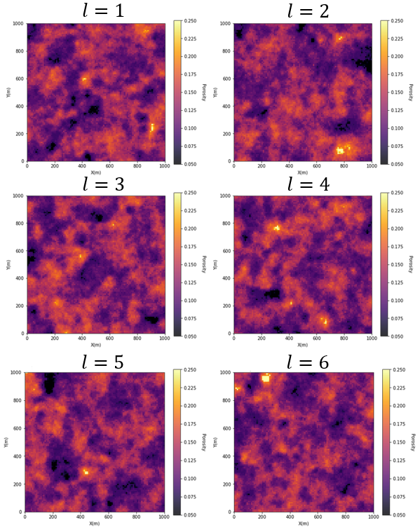
The Decision Scenarios#
Decision Scenario - discrete choices for developing the spatial, subsurface resource.
complete - each decision scenario includes all details needed to simulate extraction, for example, well locations, completion types, dig limits, mining block sequence
mutually exclusive - you can only make one choice, it is not possible to select 2 or more choices
exhaustive - all possible choices are included, there is no other choices available
For an example of decision scenarios, consider 3 potential well locations with drainage radius,
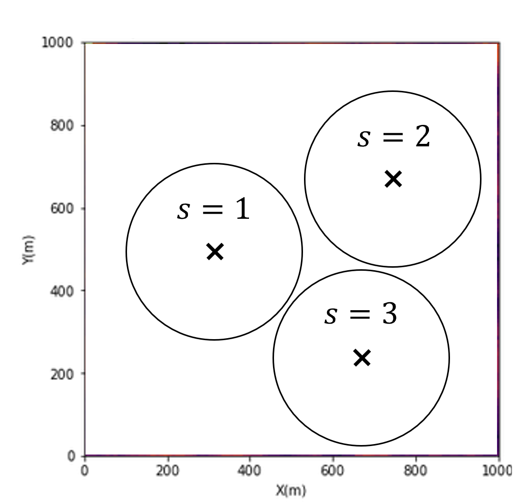
Profit Metric#
The profit metric is,
a transfer function to map from spatial realizations, \(\ell\), and decision scenario, \(s\), to a decision criteria, \(P(\ell,s)\)
as a decision criteria for maximizing profitability (or minimizing loss), this metric should be as close to profit or loss as possible, e.g., don’t stop short with resource in place, instead calculate the value of that resouce
is in the units of the thing are we trying to maximize. For example, net present value, tonnage contaminant removed from soil, or volume of resource recovered
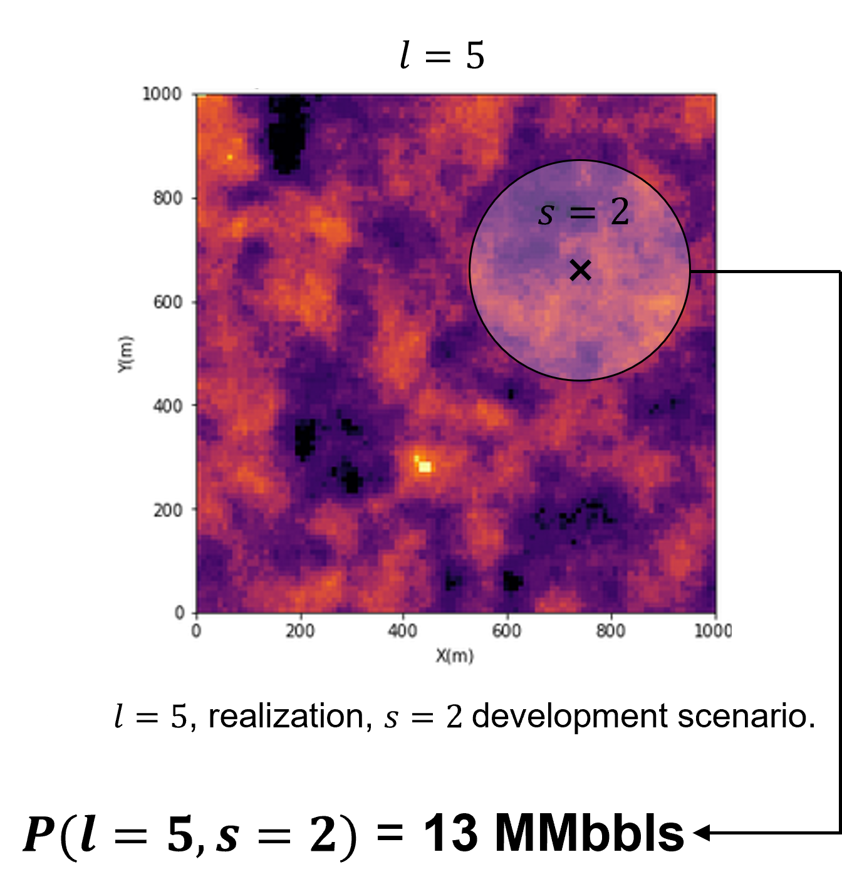
We calculate profit over all \(L\) subsurface realizations, and \(S\) decision scenarios. If computational feasible, we work with the,
full combinatorial of \(L\) subsurface realizations and \(S\) decision scenarios, \(P(\ell = 1,\ldots,L,s=1,\ldots,S)\)
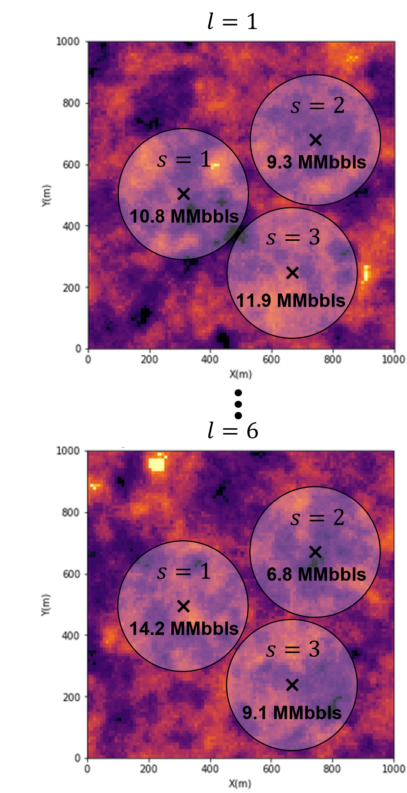
Recall the Common Geostatistical Modeling Workflow#
We previously discussed the concept of decision criteria in the common geostatistical modeling workflow, moving from data to decision(s).
a feature that is calculated by applying the transfer function to the subsurface model(s) to support decision making.
decision criteria represent profit, health, environment and safety.
in decision making it is common to maximize or minimize loss, so we will see decision criteria called profit or loss, but they are all “decision criteria”
Expected Profit#
To integrate the uncertainty model, we calculate expected profit \(E\{P(S)\}\)
expected profit is a probability, \(\lambda_l\), weighted average of profit over subsurface uncertainty
if all models are equiprobable, this simplifies to,
Maximize Expected Profit#
Now we maximize the expected profit \(E\{P(S)\}\),
calculate the expected profit for all decision scenarios, \(s = 1,\ldots, S\)
select the development scenario, \(s\), that maximizes expected profit over the subsurface realizations, \(L\), represented as,
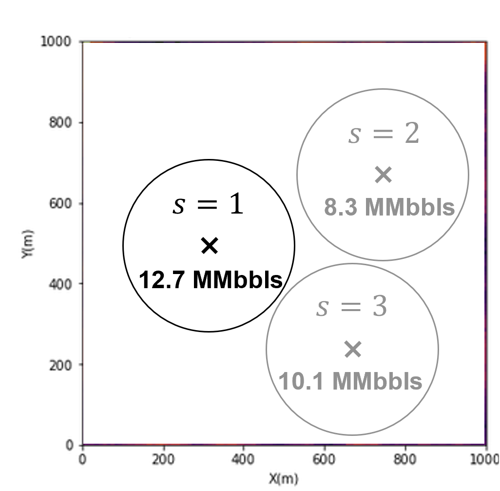
This is the fundamental workflow for making an optimum decision in the presence of uncertainty.
Below we demonstrate this approach to select a single estimate from an uncertainty distribution. But, let’s first talk about uncertainty.
How do we make optimum estimates in the presence of uncertainty?
we cannot provide an uncertainty distribution to operations for decision making.
we must provide a single estimate. We must choose a single estimate in the presence of uncertainty
Let’s think about making this single estimate, we could just choose the average, expectation assuming equal probability for each outcome.
The expectation estimate assumes the cost of under- and over-estimation is symmetric and squared, i.e., the squared loss L2 norm
Risk Adverse – cost of overestimation > cost of underestimation
Risk Seeking – cost of overestimation < cost of underestimation
Let’s formalize this with the concept of loss functions.
Loss Function#
A common workflow to make a decision in the presence of uncertainty is calculate the decision criteria by loss function. A loss function has the following aspects,
loss due to over- and underestimation of the true property
no loss if the estimate is correct, i.e., if Estimate – Truth = 0
Note: estimating with the mean minimizes the quadratic loss function
Here’s the L2 loss, symmetric and increasing with the square away from 0, perfectly accurate prediction,
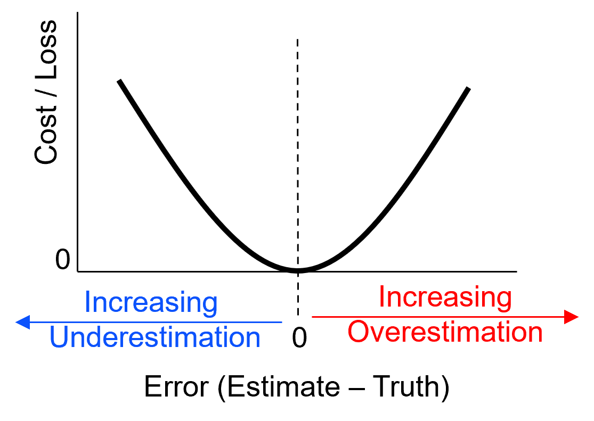
For a more complicated example, overestimation is more costly than underestimation and at some threshold underestimation any further has no more cost,
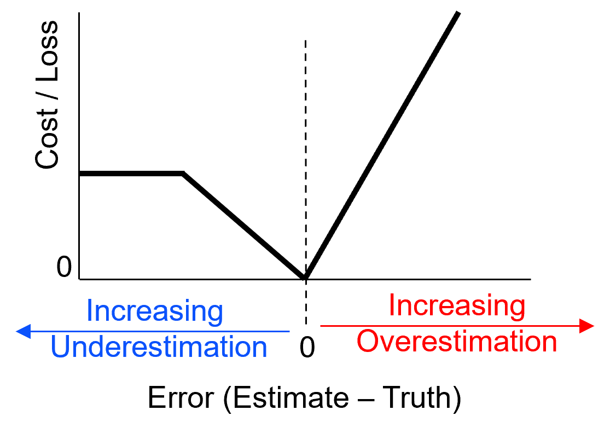
To further illustrate loss functions, consider the loss function to support the decision to carry an umbrella given uncertainty in the weather, rain or no rain from Professor Clayton Deutsch’s geostatistics course.
Overestimation - you estimate rain, but no rain happens
Underestimation = you estimate no rain, but rain happens
Should you carry an umbrella? The loss function depend on where you are going?
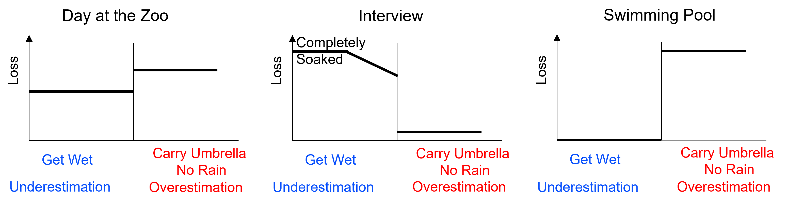
Decision Making with Loss Functions#
This is the workflow for decision making in the presence of uncertainty,
quantify cost of over- and underestimation in a loss function
apply loss function to the random variable of interest for a range of estimates
calculate the expected loss for each estimate
make the decision that minimizes loss
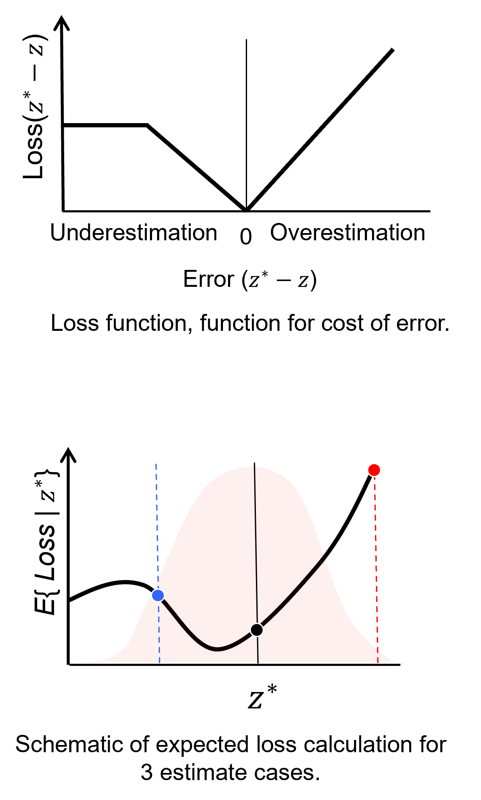
To understand the change in expected profit over different estimates, let’s put the flipped loss on the uncertainty distribution.
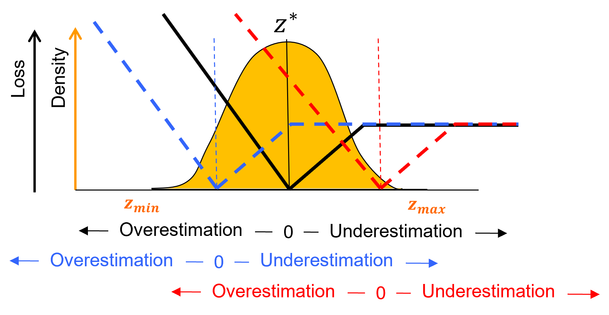
Now we can explain the results,
the estimate (black) is the lowest because the mode of the uncertainty distribution (highest probability) includes the lowest loss portions of the loss function.
the estimate (red) is the highest because the cost of over estimation is more costly and the entire uncertainty distribution is in the over estimated portion of the loss function
the estimate (blue) is quite low, but the cost of underestimation levels off, so the loss is not that high
Let’s actually demonstrate the calculation of expected loss for a discrete case, we turn the uncertainty model into a normalized histogram with probability to be in each bin,
Now we can calculate the expected loss for an estimate of 100 MMbbl as,
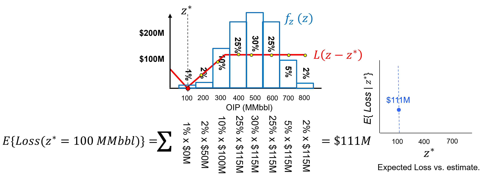
and the expected loss for an estimate of 400 MMbbl as,
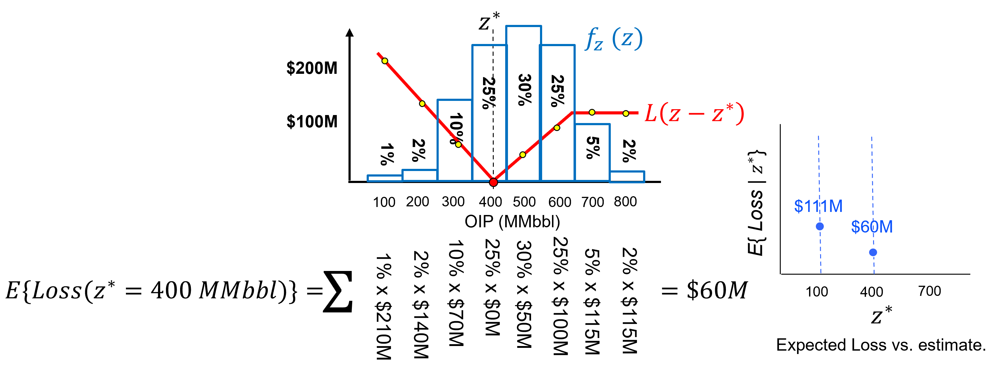
and the expected loss for an estimate of 700 MMbbl as,
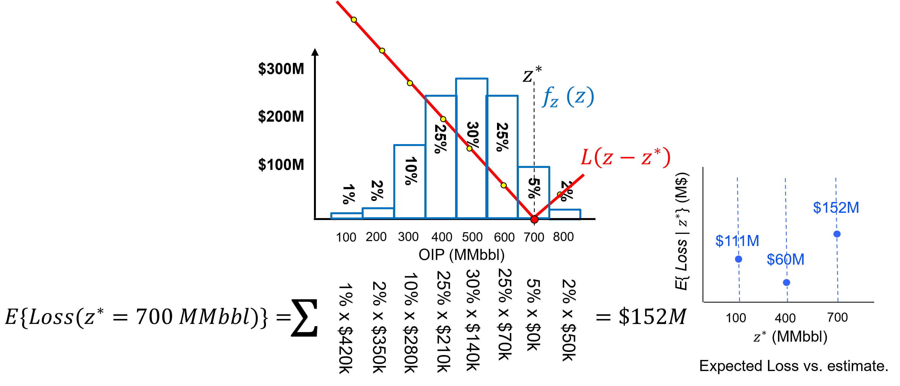
To demonstrate this, I built out an interactive dashboard for decision making in the presence of uncertainty.
this will not render in the book, so in the future I will add static examples for the book.
here is the interactive dashboard.
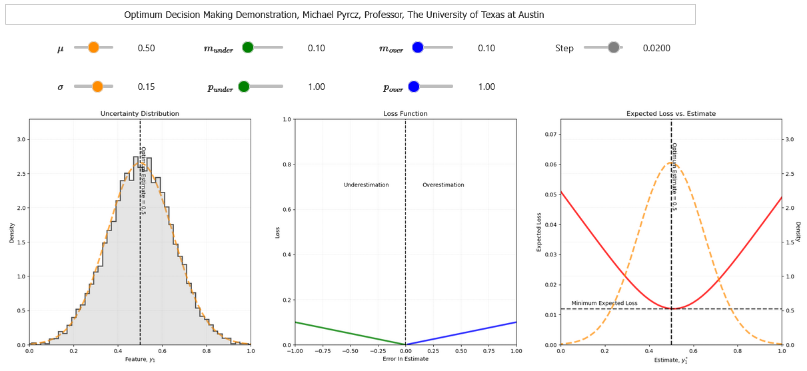
Load the Required Libraries#
The following code loads the required libraries.
import geostatspy.GSLIB as GSLIB # GSLIB utilies, visualization and wrapper
import geostatspy.geostats as geostats # GSLIB methods convert to Python
We will also need some standard packages. These should have been installed with Anaconda 3.
ignore_warnings = True # ignore warnings?
import numpy as np # ndarrys for gridded data
import pandas as pd # DataFrames for tabular data
import os # set working directory, run executables
import matplotlib.pyplot as plt # for plotting
from matplotlib.ticker import (MultipleLocator, AutoMinorLocator) # control of axes ticks
from matplotlib.ticker import FuncFormatter
from scipy.interpolate import Rbf # countours that extrapolate
from scipy.signal import convolve2d # convolution
from scipy.interpolate import griddata
from scipy.ndimage import gaussian_filter
import random
cmap = plt.cm.inferno
plt.rc('axes', axisbelow=True) # plot all grids below the plot elements
if ignore_warnings == True:
import warnings
warnings.filterwarnings('ignore')
seed = 13 # set ramdon number seed
cmap = plt.cm.inferno
If you get a package import error, you may have to first install some of these packages. This can usually be accomplished by opening up a command window on Windows and then typing ‘python -m pip install [package-name]’. More assistance is available with the respective package docs.
Declare Functions#
These are some conveneince functions for more readable code in our workflows.
def add_grid2():
plt.gca().grid(True, which='major',linewidth = 1.0); plt.gca().grid(True, which='minor',linewidth = 0.2) # add y grids
plt.gca().tick_params(which='major',length=7); plt.gca().tick_params(which='minor', length=4)
plt.gca().xaxis.set_minor_locator(AutoMinorLocator()); plt.gca().yaxis.set_minor_locator(AutoMinorLocator()) # turn on minor ticks
def add_grid(sub_plot):
sub_plot.grid(True, which='major',linewidth = 1.0); sub_plot.grid(True, which='minor',linewidth = 0.2) # add y grids
sub_plot.tick_params(which='major',length=7); sub_plot.tick_params(which='minor', length=4)
sub_plot.xaxis.set_minor_locator(AutoMinorLocator()); sub_plot.yaxis.set_minor_locator(AutoMinorLocator()) # turn on minor ticks
def generate_gaussian_fields(L, ny, nx): # Generate L random 2D Gaussian fields (white noise).
return np.random.randn(L, ny, nx)
def circular_kernel(radius): # Create a 2D circular kernel of a given radius.
size = int(2 * radius + 1)
y, x = np.ogrid[-radius:radius+1, -radius:radius+1]
mask = x**2 + y**2 <= radius**2
kernel = np.zeros((size, size))
kernel[mask] = 1
kernel /= np.sum(kernel) # Normalize
return kernel
def convolve_fields(fields, kernel): # Convolve each 2D field with the given kernel.
L, ny, nx = fields.shape
convolved_fields = np.empty_like(fields)
for i in range(L):
convolved_fields[i] = convolve2d(fields[i], kernel, mode='same', boundary='wrap')
return convolved_fields
def generate_sample_locations(xmin, xmax, ymin, ymax, nx, ny): # array of [sample_index, y, x] for a grid with samples
dx = (xmax - xmin) / nx
dy = (ymax - ymin) / ny
x = np.linspace(xmin + dx/2, xmax - dx/2, nx)
y = np.linspace(ymin + dy/2, ymax - dy/2, ny)
xv, yv = np.meshgrid(x, y)
x_flat = xv.ravel()
y_flat = yv.ravel()
samples = np.stack([y_flat, x_flat], axis=1)
return samples, xv, yv
def average_within_radius(grid, x, y, p, domain_size=1000): # Compute average of cells within p meters from point (x, y), flipped Y-axis
ny, nx = grid.shape
dx = domain_size / nx
dy = domain_size / ny
# Convert (x, y) to fractional grid indices
ix_center = x / dx
iy_center = y / dy
# Flip Y-axis: adjust index range accordingly
j_center = ny - 1 - iy_center # flipped row index
# Bounding box in index space
i_min = int(max(0, np.floor(ix_center - p / dx)))
i_max = int(min(nx - 1, np.ceil(ix_center + p / dx)))
j_min = int(max(0, np.floor(j_center - p / dy)))
j_max = int(min(ny - 1, np.ceil(j_center + p / dy)))
# Index meshgrid
j_indices, i_indices = np.meshgrid(np.arange(j_min, j_max + 1),
np.arange(i_min, i_max + 1),
indexing='ij')
# Convert indices to physical coordinates
x_coords = (i_indices + 0.5) * dx
y_coords = (ny - j_indices - 0.5) * dy # Flip Y-axis
# Distance from target point
distances = np.sqrt((x_coords - x)**2 + (y_coords - y)**2)
# Mask and average
mask = distances <= p
values_within_radius = grid[j_indices[mask], i_indices[mask]]
if values_within_radius.size == 0:
return np.nan
else:
return np.mean(values_within_radius)
Maximizing the Expected Profit Example#
Here is a practical demonstration of decision making in the presence of uncertainty with expected profit over multiple realizations, \(\ell = 1,\ldots,L\) and decision scenarios, \(s = 1,\ldots,S\),
calculate \(L\) realizations to characterize uncertianty.
specify \(S\) possible choices.
specify the profit function, \(P(\ell,s)\).
calculate the expected profit over all possible choices, $E{
select the \(s\) decision scenario that maximizes the profit.
First let’s make the realizations for our uncertainty model. For efficiency we use a convolution model.
stochastic trend (deterministic given a set random number seed) + stochastic residual
np.random.seed(seed = seed) # set random seed
xmin = 0.0; xmax = 1000.0; ymin = 0.0; ymax = 1000.0; vmin = 0.0; vmax = 0.4; nw = 5
S = nw * nw
L = 25; ny, nx = 100, 100; r = 5; r_trend = 15 # number of realizations, model size, and kernel radius
smoothed_fields_trend = np.zeros((L,ny,nx))
trend = generate_gaussian_fields(1, ny, nx)
kernel_trend = circular_kernel(r_trend)
trend = convolve_fields(trend, kernel_trend)
trend = GSLIB.affine(trend.flatten(),0.2,0.07).reshape(ny,nx)
fields = generate_gaussian_fields(L, ny, nx) # generate and convolve fields
kernel = circular_kernel(r) # make kernel to impose spatial continuity by convolution
smoothed_fields = convolve_fields(fields, kernel)
fields = generate_gaussian_fields(L, ny, nx) # generate and convolve fields
kernel = circular_kernel(r) # make kernel to impose spatial continuity by convolution
smoothed_fields = convolve_fields(fields, kernel)
for l in range(0,L): # correct mean and variance
smoothed_fields[l] = GSLIB.affine(smoothed_fields[l].flatten(),0.0,0.04).reshape(ny,nx)
smoothed_fields_trend[l] = smoothed_fields[l] + trend
for i in range(1,L+1): # visualize all the realizations
plt.subplot(5, 5, i)
plt.title("Realizations " + str(i))
plt.imshow(smoothed_fields_trend[i-1], cmap=cmap,extent = [xmin,xmax,ymin,ymax],vmin = vmin, vmax = vmax)
plt.colorbar()
plt.tight_layout()
plt.subplots_adjust(left=0.0, bottom=0.0, right=5.0, top=5.1, wspace=0.05, hspace=0.2); plt.show()
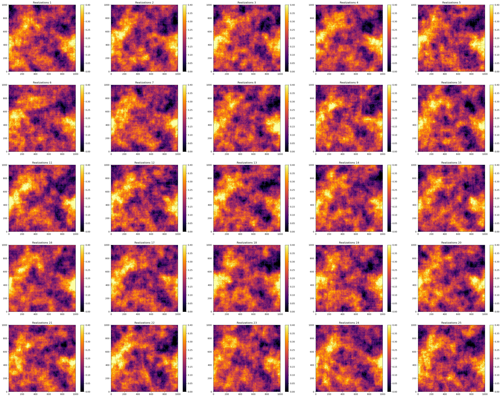
Now we can specify the decision scenarios
a 5 x 5 grid of potential well locations
scenarios, xv, yv = generate_sample_locations(xmin, xmax, ymin, ymax, nw, nw) # get the sample locations
plt.subplot(111) # visualize the decision scenarios with a single realization
plt.title("Realizations 1 with Decision Scenarios")
im = plt.imshow(smoothed_fields_trend[0], cmap=cmap,extent = [xmin,xmax,ymin,ymax],vmin = vmin, vmax = vmax)
plt.scatter(scenarios[:,1],scenarios[:,0],color='white',edgecolor = 'black')
for s in range(0,S):
plt.annotate('Choice #' + str(s),[scenarios[s,1],scenarios[s,0]+20],color= 'white',ha = 'center',fontsize=8)
plt.colorbar(im); plt.tight_layout(); add_grid2()
plt.subplots_adjust(left=0.0, bottom=0.0, right=1.0, top=1.1, wspace=0.05, hspace=0.2); plt.show()
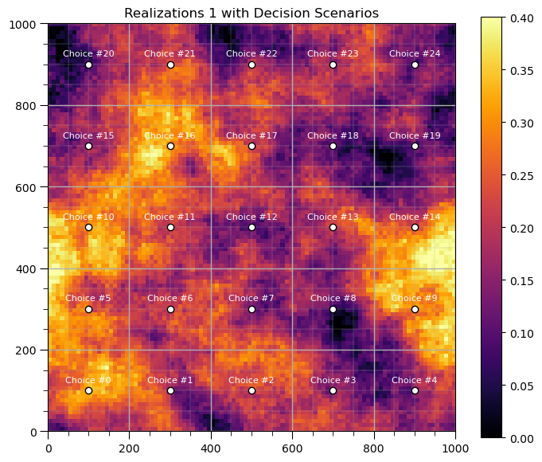
Now we specfy a simple profit calculation. Value in US$ for hydrocarbon extracted from the well assuming,
all rock with in 50 meters is drained perfectly
the porosity is completely full of hydrocarbon, i.e., oil saturation is 100%
10 m uniform reservoir thickness
6.28981 barrels / m^3
$70.0 / barrel
Let’s run this on only the first realization and add the profit for just this realization on the map.
radius = 50.0 # select the drainage radius
thickness = 10.0 # select the reservoir thickness
profit_onereal = np.zeros((S))
for s in range(0,S):
profit_onereal[s] = average_within_radius(smoothed_fields_trend[0], x=scenarios[s,1],y=scenarios[s,0], p=radius, domain_size=1000)
profit_onereal[s] = profit_onereal[s] * np.pi * radius * radius * thickness * 6.28981 * 70.0
plt.subplot(111)
plt.title("Realizations 1 with Decision Scenarios and Profit(s=1)")
im = plt.imshow(smoothed_fields_trend[0], cmap=cmap,extent = [xmin,xmax,ymin,ymax],vmin = vmin, vmax = vmax)
plt.scatter(scenarios[:,1],scenarios[:,0],color='white',edgecolor = 'black')
for s in range(0,S):
plt.annotate('Choice #' + str(s),[scenarios[s,1],scenarios[s,0]+20],color= 'white',ha = 'center',fontsize=8)
label = f"${np.round(profit_onereal[s],2):,.2f}"
plt.annotate(str(label),[scenarios[s,1],scenarios[s,0]-40],color= 'white',ha = 'center',fontsize=8)
plt.tight_layout(); add_grid2()
cbar = plt.colorbar(im, orientation="vertical"); cbar.set_label('Porosity (fraction)', rotation=270, labelpad=20)
plt.subplots_adjust(left=0.0, bottom=0.0, right=1.0, top=1.1, wspace=0.05, hspace=0.2); plt.show()
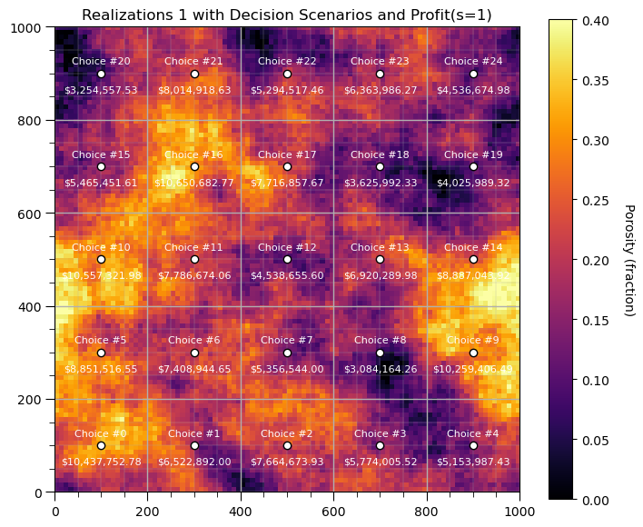
Now we calculate the expected profit over all realizations.
profit = np.zeros((L,S))
for l in range(0,L):
for s in range(0,S):
profit[l,s] = average_within_radius(smoothed_fields_trend[l], x=scenarios[s,1],y=scenarios[s,0], p=radius, domain_size=1000)
profit[l,s] = profit[l,s] * np.pi * radius * radius * 10.0 * 6.28981 * 70.0
expected_profit = np.average(profit,axis = 0)
plt.subplot(111)
plt.title("Decision Scenarios and Expected Profit with Countours")
sc = plt.scatter(scenarios[:,1],scenarios[:,0],c=expected_profit,edgecolor = 'white',cmap=cmap,zorder=100)
for s in range(0,S):
plt.annotate('Choice #' + str(s),[scenarios[s,1],scenarios[s,0]+20],color= 'white',ha = 'center',fontsize=8,zorder=100)
label = f"${np.round(expected_profit[s],2):,.2f}"
plt.annotate(str(label),[scenarios[s,1],scenarios[s,0]-40],color= 'white',ha = 'center',fontsize=8,zorder=100)
x_grid = np.linspace(xmin, xmax, 100) # higher resolution grid between xmin and xmax
y_grid = np.linspace(ymin, ymax, 100) # higher resolution grid between ymin and ymax
X, Y = np.meshgrid(x_grid, y_grid)
rbf = Rbf(xv.flatten(), yv.flatten(), expected_profit, function='linear') # or 'multiquadric', 'thin_plate', etc.
Z = rbf(X, Y) # works on full grid
ct = plt.contourf(X, Y, Z,levels=20, cmap=cmap,zorder=0)
cbar = plt.colorbar(ct,orientation="vertical", ticks=np.linspace(0, 12000000, 11)); plt.tight_layout()
formatter = FuncFormatter(lambda x, pos: f"${x:,.2f}")
cbar.set_label('Expected Profit', rotation=270, labelpad=20)
cbar.ax.yaxis.set_major_formatter(formatter)
plt.xlabel('X (m)'); plt.ylabel('Y (m)')
plt.xlim([xmin,xmax]); plt.ylim([ymin,ymax]); add_grid2()
plt.subplots_adjust(left=0.0, bottom=0.0, right=1.0, top=1.1, wspace=0.05, hspace=0.2); plt.show()
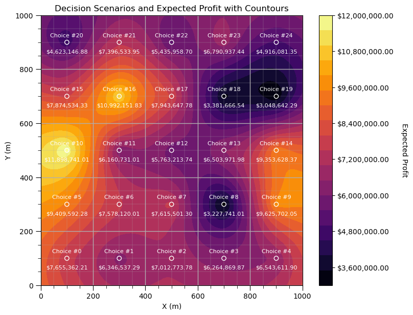
I have to admit, this turned out very cool. We can now produce a map of expected profit for each well location.
but ultimately we need to identify the next choice, so here is.
s_best = np.argmax(expected_profit) # get the best decision scenario
plt.subplot(111)
plt.title("Decision Scenarios and Expected Profit with Countours")
sc = plt.scatter(scenarios[:,1],scenarios[:,0],c=expected_profit,edgecolor = 'white',cmap=cmap,vmin = 0, vmax = 500000,zorder=100)
for s in range(0,S):
plt.annotate('Choice #' + str(s),[scenarios[s,1],scenarios[s,0]+20],color= 'white',ha = 'center',fontsize=8,zorder=100)
label = f"${np.round(expected_profit[s],2):,.2f}"
plt.annotate(str(label),[scenarios[s,1],scenarios[s,0]-40],color= 'white',ha = 'center',fontsize=8,zorder=100)
plt.scatter(scenarios[s_best,1],scenarios[s_best,0],c=expected_profit[s_best],s = 100,marker='s',
edgecolor = 'black',cmap=cmap,vmin = 0, vmax = 500000,zorder=50)
plt.annotate('Best Choice',[scenarios[s_best,1],scenarios[s_best,0]+20],color= 'black',ha = 'center',fontsize=8,zorder=200)
label = f"${np.round(expected_profit[s_best],2):,.2f}"
plt.annotate(str(label),[scenarios[s_best,1],scenarios[s_best,0]-40],color= 'black',ha = 'center',fontsize=8,zorder=200)
cbar = plt.colorbar(sc,orientation="vertical", ticks=np.linspace(0, 500000, 11)); plt.tight_layout()
formatter = FuncFormatter(lambda x, pos: f"${x:,.2f}")
cbar.set_label('Expected Profit', rotation=270, labelpad=20)
cbar.set_ticks(cbar.get_ticks()) # Ensure ticks are set
cbar.ax.yaxis.set_major_formatter(formatter)
x_grid = np.linspace(xmin, xmax, 100) # higher resolution grid between xmin and xmax
y_grid = np.linspace(ymin, ymax, 100) # higher resolution grid between ymin and ymax
X, Y = np.meshgrid(x_grid, y_grid)
rbf = Rbf(xv.flatten(), yv.flatten(), expected_profit, function='linear') # or 'multiquadric', 'thin_plate', etc.
Z = rbf(X, Y) # works on full grid
plt.contourf(X, Y, Z, levels=20, cmap=cmap,zorder=0) # plot a smooth map of expected profit
plt.xlabel('X (m)'); plt.ylabel('Y (m)')
plt.xlim([xmin,xmax]); plt.ylim([ymin,ymax]); add_grid2()
plt.subplots_adjust(left=0.0, bottom=0.0, right=1.0, top=1.1, wspace=0.05, hspace=0.2); plt.show()
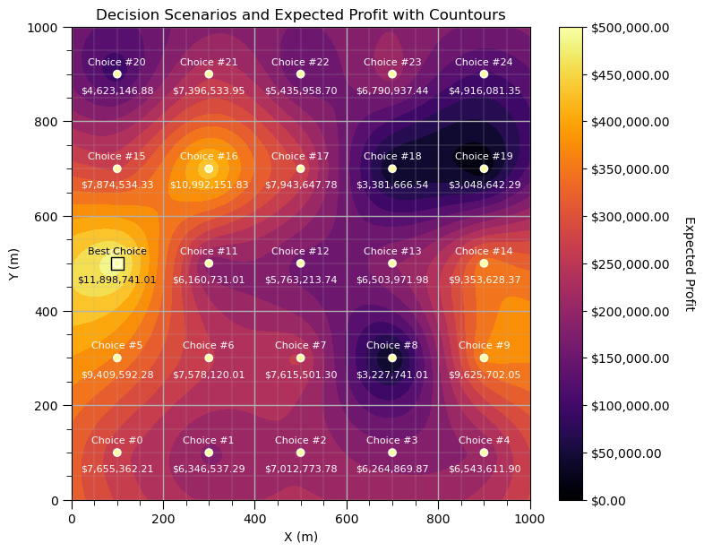
Optimum Estimate with a Loss Function Example#
Let’s start by parameterizing and plotting our loss function.
I designed a function similar to the illustrations above for loss due to over- or underestimation of hydrocarbon resources in millions of barrels.
for convenience, I made a function for my loss function, i.e., a loss function, function.
m_over = 10.0; m_under = 7.0; max_under = 50.0 # specify a simple piece-wise linear loss function
delta_values = np.arange(-10.0,10.0,0.02)
def loss_function(error,m_under,max_under,m_over): # loss function function (yes, I did this on purpose)
loss = np.where(error < 0.0, np.clip(-1*error * m_under,a_min= None,a_max = max_under),error * m_over)
return loss
loss_plot = loss_function(delta_values,m_under,max_under,m_over) # calculate loss over all possible estimates
plt.plot(delta_values,loss_plot,c='black',lw=3,zorder=1); plt.plot(delta_values,loss_plot,c='red',lw=1,zorder=10) # plot loss
plt.plot([0,0],[0,100],color='black',ls='--'); plt.annotate('Accurate',[0,70],rotation=270)
plt.annotate('Underestimation',[-6,70], rotation=0,horizontalalignment='right',zorder=10)
plt.annotate('Overestimation',[6,70], rotation=0,horizontalalignment='left',zorder=10)
plt.xlim([-10,10]); plt.ylim([0,100]); add_grid2(); plt.title('Loss Function'); plt.ylabel('Cost (M$)')
plt.xlabel(r'Error, Estimate - Truth ($OIP^*-OIP$ MMbbls)')
plt.subplots_adjust(left=0.0, bottom=0.0, right=1.0, top=0.6, wspace=0.05, hspace=0.2); plt.show()
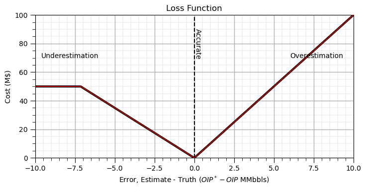
Distribution of Uncertainty#
Let’s assume a parametric uncertainty distribution for resources that we can easily modify to try out some different cases.
alpha = 1.5; beta = 7.0 # uncertainty model, parameters of the beta distribution
mean = 10.0; stdev = 3.0
uncertainty_samples = np.random.beta(a= alpha, b = beta, size = 1000) # draw samples
uncertainty_samples = GSLIB.affine(uncertainty_samples, mean, stdev) # correct the mean and standard deviation
prob,bin_edges, _ = plt.hist(uncertainty_samples,color='darkorange',edgecolor='black',bins = np.linspace(0,25,26),density = True); add_grid2()
bin_centroids = (bin_edges[:-1] + bin_edges[1:]) / 2
plt.xlim([0,25]); plt.xlabel('Resources OIP (MMbbls)'); plt.ylabel('Probability'); plt.title('Uncertainty Model')
plt.subplots_adjust(left=0.0, bottom=0.0, right=1.0, top=0.6, wspace=0.05, hspace=0.2); plt.show()
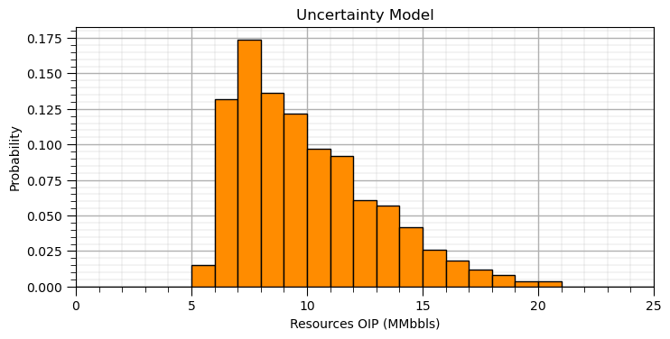
Calculate Expected Loss for an Estimate#
Now, let’s select a single estimate and calculate the expected loss.
we repeat the calculation for a range of estimates to also visualize the expected loss vs. estimate curve.
estimate = 13.5 # select and estimate for demonstration and visualization
fig, axs = plt.subplots(1, 2, figsize=(8, 6),sharey = True)
ax1 = axs[0]; ax2 = axs[1]
prob,bin_edges, _ = ax1.hist(uncertainty_samples,color='darkorange',edgecolor='black',bins = np.linspace(0,25,26),density = True);
add_grid(ax1)
bin_centroids = (bin_edges[:-1] + bin_edges[1:]) / 2
error = -1*(bin_centroids - estimate) # flip the loss function
loss_plot_est = loss_function(error,m_under,max_under,m_over)
ax1b = ax1.twinx() # plot uncertainty model, estimate and loss function anchored at estimate
ax1b.plot(bin_centroids,loss_plot_est,c='black',lw=3,zorder=9); ax1b.plot(bin_centroids,loss_plot_est,c='red',lw=1,zorder=10)
ax1b.axvline(x=estimate, color='green', clip_on=False); ax1b.annotate('Estimate',[estimate-0.5,100.0],color='green',rotation = 90.0)
ax1b.set_ylim([0.,120.]); add_grid(ax2)
plt.xlim([0,25]); plt.xlabel('Resources OIP (MMbbls)'); ax1.set_ylabel('Probability'); plt.title('Uncertainty Model and Loss Function')
ax1b.set_ylabel('Loss (M$)')
for ibin,bincenter in enumerate(bin_centroids):
ax1.annotate(np.round(prob[ibin],3),[bincenter,prob[ibin]+0.002], ha='center',size=7)
ax2.hist(uncertainty_samples,color='darkorange',edgecolor='black',bins = np.linspace(0,25,26),density = True,alpha=0.2);
ax2b = ax2.twinx()
expected_loss = np.dot(loss_plot_est,prob)
ax2b.scatter(estimate,expected_loss,marker='s',s=100,color='green',edgecolor='black',zorder=20)
ax2b.annotate('Estimate Expected Loss = $' + str(np.round(expected_loss,2)) + 'M',[estimate,expected_loss+2],ha='center',color='green',zorder=20)
ax2b.plot([estimate,estimate],[0,expected_loss],color='green',lw=2,zorder=30)
ax2b.plot([estimate,25],[expected_loss,expected_loss],color='green',lw=2,zorder=30)
ax2b.set_ylabel('Expected Loss (E{M$})'); ax2b.set_ylim([0,120]); ax2.set_ylabel('Probability')
est_mat = np.linspace(0,25,30) # calculate expected loss for all possible estimates
exp_loss = np.zeros(len(est_mat))
for iest, est in enumerate(est_mat):
error = -1*(bin_centroids - est)
loss_plot_est_curve = loss_function(error,m_under,max_under,m_over)
exp_loss[iest] = np.dot(loss_plot_est_curve,prob)
ax2b.scatter(est_mat,exp_loss,c='white',edgecolor='black',marker='o',s=40,zorder=10)
iopt_estimate = np.argmin(exp_loss); opt_est = est_mat[iopt_estimate]; opt_loss = exp_loss[iopt_estimate] # get optimum estimate and loss
ax1b.axvline(x=opt_est, color='red', clip_on=False,zorder=5) # add optimum estimate and loss to the first subplot
ax1b.annotate('Optimum Estimate',[opt_est-0.5,93.0],color='red',rotation = 90.0,zorder=5)
ax2b.scatter(opt_est,opt_loss,marker='s',s=100,color='red',edgecolor='black',zorder=10) # plot expected loss, estimate and optimum
ax2b.annotate('Optimum Estimate = ' + str(np.round(opt_est,2)),[opt_est,opt_loss+2],ha='center',color='red',zorder=10)
ax2b.plot([opt_est,opt_est],[0,opt_loss],color='red',lw=2,zorder=30)
ax2b.plot([opt_est,25],[opt_loss,opt_loss],color='red',lw=2,zorder=30)
ax2b.plot(est_mat,exp_loss,c='black',marker='o',lw=2,zorder=1)
ax2.set_xlim([0,25]); ax2.set_xlabel('Resources OIP (MMbbls)'); ax2.set_title('Expected Loss vs. Estimated Resources')
plt.subplots_adjust(left=0.0, bottom=0.0, right=2.0, top=1.0, wspace=0.2, hspace=0.2); plt.show()
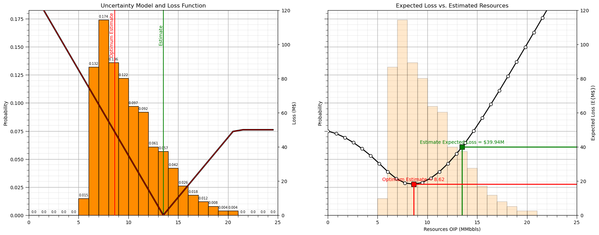
To help you understand the nuts and bolts of the expected loss calculation for the estimate above, let’s make a table with,
truth values: bin centroids of the histogram
error: estimate - truth
loss: loss function applied to the error
probability: probability of truth being each outcome
probability times loss: for each possible for each outcome
df = pd.DataFrame([bin_centroids, error, loss_plot_est, prob*100,prob*loss_plot_est], index=['Truth', 'Error', 'Loss', 'Prob','Prob x Loss']).round(1)
df
| 0 | 1 | 2 | 3 | 4 | 5 | 6 | 7 | 8 | 9 | ... | 15 | 16 | 17 | 18 | 19 | 20 | 21 | 22 | 23 | 24 | |
|---|---|---|---|---|---|---|---|---|---|---|---|---|---|---|---|---|---|---|---|---|---|
| Truth | 0.5 | 1.5 | 2.5 | 3.5 | 4.5 | 5.5 | 6.5 | 7.5 | 8.5 | 9.5 | ... | 15.5 | 16.5 | 17.5 | 18.5 | 19.5 | 20.5 | 21.5 | 22.5 | 23.5 | 24.5 |
| Error | 24.5 | 23.5 | 22.5 | 21.5 | 20.5 | 19.5 | 18.5 | 17.5 | 16.5 | 15.5 | ... | 9.5 | 8.5 | 7.5 | 6.5 | 5.5 | 4.5 | 3.5 | 2.5 | 1.5 | 0.5 |
| Loss | 130.0 | 120.0 | 110.0 | 100.0 | 90.0 | 80.0 | 70.0 | 60.0 | 50.0 | 40.0 | ... | 14.0 | 21.0 | 28.0 | 35.0 | 42.0 | 49.0 | 50.0 | 50.0 | 50.0 | 50.0 |
| Prob | 0.0 | 0.0 | 0.0 | 0.0 | 0.0 | 1.5 | 13.2 | 17.4 | 13.6 | 12.2 | ... | 2.6 | 1.8 | 1.2 | 0.8 | 0.4 | 0.4 | 0.0 | 0.0 | 0.0 | 0.0 |
| Prob x Loss | 0.0 | 0.0 | 0.0 | 0.0 | 0.0 | 1.2 | 9.2 | 10.4 | 6.8 | 4.9 | ... | 0.4 | 0.4 | 0.3 | 0.3 | 0.2 | 0.2 | 0.0 | 0.0 | 0.0 | 0.0 |
5 rows × 25 columns
Now to calculate the expected loss for our estimate, we sum the ‘Prob x Loss’ row.
expected_loss_demo = df.loc['Prob x Loss'].sum()
print(np.round(expected_loss_demo))
40.0
Minimizing the Expected Loss#
Let’s repeat the calculation of expected loss vs. estimate and then select the estimate that minimizes the expected loss.
the plot above included additional information for illustration, including the loss function positioned to calculate the expected loss of a specific estimate, so we remove that now
plt.subplot(111)
expected_loss = np.dot(loss_plot_est,prob)
plt.ylabel('Expected Loss (E{M$})'); plt.ylim([0,120]); ax2.set_ylabel('Probability')
est_mat = np.linspace(0,25,30)
exp_loss = np.zeros(len(est_mat))
for iest, est in enumerate(est_mat):
error = -1*(bin_centroids - est)
loss_plot_est = loss_function(error,m_under,max_under,m_over)
exp_loss[iest] = np.dot(loss_plot_est,prob)
min_est = est_mat[np.argmin(exp_loss)]
min_est_loss = exp_loss[np.argmin(exp_loss)]
plt.annotate('Minimum Expected Loss = $' + str(np.round(min_est_loss,2)) + 'M',[15,6],ha='left',color='red',zorder=20)
plt.annotate('Optimum Estimate = ' + str(np.round(min_est,2)) + 'MMbbls',[15,1],ha='left',color='red',zorder=20)
plt.scatter(min_est,min_est_loss,marker='s',color='red',edgecolor='black',s=50,zorder=40)
plt.scatter(est_mat,exp_loss,c='white',edgecolor='black',marker='o',s=40,zorder=10)
plt.plot(est_mat,exp_loss,c='black',marker='o',lw=2,zorder=1)
plt.xlim([0,25]); plt.xlabel('Resources OIP (MMbbls)'); plt.title('Expected Loss vs. Estimated Resources'); add_grid2()
plt.subplots_adjust(left=0.0, bottom=0.0, right=1.0, top=1.0, wspace=0.2, hspace=0.2); plt.show()
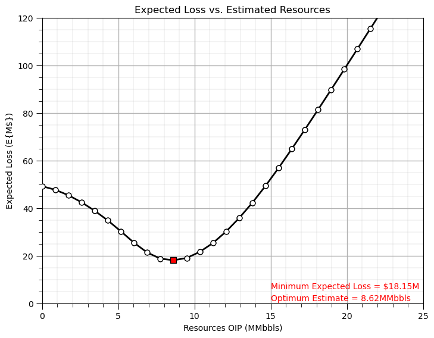
About the Author#

Michael Pyrcz is a professor in the Cockrell School of Engineering, and the Jackson School of Geosciences, at The University of Texas at Austin, where he researches and teaches subsurface, spatial data analytics, geostatistics, and machine learning. Michael is also,
the principal investigator of the Energy Analytics freshmen research initiative and a core faculty in the Machine Learn Laboratory in the College of Natural Sciences, The University of Texas at Austin
an associate editor for Computers and Geosciences, and a board member for Mathematical Geosciences, the International Association for Mathematical Geosciences.
Michael has written over 100 peer-reviewed publications, a Python package for spatial data analytics, co-authored a textbook on spatial data analytics, Geostatistical Reservoir Modeling and author of two recently released e-books, Applied Geostatistics in Python: a Hands-on Guide with GeostatsPy and Applied Machine Learning in Python: a Hands-on Guide with Code.
All of Michael’s university lectures are available on his YouTube Channel with links to 100s of Python interactive dashboards and well-documented workflows in over 40 repositories on his GitHub account, to support any interested students and working professionals with evergreen content. To find out more about Michael’s work and shared educational resources visit his Website.
Want to Work Together?#
I hope this content is helpful to those that want to learn more about subsurface modeling, data analytics and machine learning. Students and working professionals are welcome to participate.
Want to invite me to visit your company for training, mentoring, project review, workflow design and / or consulting? I’d be happy to drop by and work with you!
Interested in partnering, supporting my graduate student research or my Subsurface Data Analytics and Machine Learning consortium (co-PI is Professor John Foster)? My research combines data analytics, stochastic modeling and machine learning theory with practice to develop novel methods and workflows. We are solving challenging subsurface problems!
I can be reached at mpyrcz@austin.utexas.edu.
I’m always happy to discuss,
Michael
Michael Pyrcz, Ph.D., P.Eng. Professor, Cockrell School of Engineering and The Jackson School of Geosciences, The University of Texas at Austin
More Resources Available at: Twitter | GitHub | Website | GoogleScholar | Geostatistics Book | YouTube | Applied Geostats in Python e-book | Applied Machine Learning in Python e-book | LinkedIn
Comments#
This was a basic demonstration of optimum decision making in the precense of uncertainty.
we build uncertainty models all the time to support decision making. With theses codes and workflows you can make optimum decisions with your uncertainty model!
I have other demonstrations on the basics of working with DataFrames, ndarrays, univariate statistics, plotting data, declustering, data transformations, trend modeling, multivariate analysis and many other workflows available at GeostatsGuy/PythonNumericalDemos and GeostatsGuy/GeostatsPy.
I hope this is helpful,
Michael